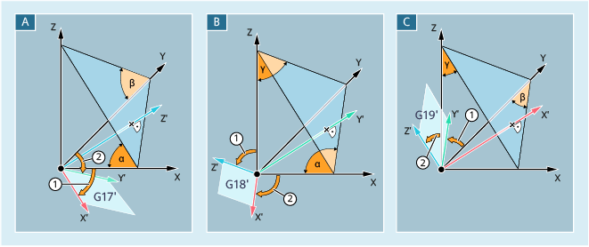

Mit den Befehlen ROTS, AROTS und CROTS können Drehungen des Werkstückkoordinatensystems (WKS) in Raumwinkeln angegeben werden. Raumwinkel sind die Winkel, welche die Schnittgeraden der gewünschten, im Raum gedrehten Ebene mit den Hauptebenen des noch nicht gedrehten WKS bilden.
Die WKS-Drehung ermöglicht das Ausrichten der Arbeitsebene parallel zur dargestellten schrägen Ebene. Die Lage des Nullpunkts des WKS bleibt dabei unverändert.
Die Orientierung des gedrehten WKS wird so festgelegt, dass die erste gedrehte Achse in der Ebene liegt, die durch diese und die 3. Achse des ursprünglichen Koordinatensystems aufgespannt wird.
α, β, γ | Raumwinkel | |
A | Ausrichten der G17-Ebene parallel zur schrägen Ebene | |
① | Erste Drehung Drehung von X um Y um Winkel α ⇒ X'-Achse parallel zur schrägen Ebene | |
② | Zweite Drehung Drehung von y' um x' um β ⇒ Y'-Achse parallel zur schrägen Ebene ⇒ Z'-Achse senkrecht zur schrägen Ebene ⇒ G17 parallel zur schrägen Ebene | |
B | Ausrichten der G18-Ebene parallel zur schrägen Ebene | |
① | Erste Drehung Drehung von Z um X um den Winkel γ ⇒ Z'-Achse parallel zur schrägen Ebene | |
② | Zweite Drehung Drehung von X' um Z' um Winkel α ⇒ X'-Achse parallel zur schrägen Ebene ⇒ Y'-Achse senkrecht zur schrägen Ebene ⇒ G18 parallel zur schrägen Ebene | |
C | Ausrichten der G19-Ebene parallel zur schrägen Ebene | |
① | Erste Drehung Drehung von y um z um den Winkel β ⇒ Y'-Achse parallel zur schrägen Ebene | |
② | Zweite Drehung Drehung von Z' um Y' um Winkel γ ⇒ Z'-Achse parallel zur schrägen Ebene ⇒ X'-Achse senkrecht zur schrägen Ebene ⇒ G19 parallel zur schrägen Ebene | |
Die Lage einer Ebene im Raum ist durch zwei Raumwinkel eindeutig bestimmt. Durch Angabe eines dritten Raumwinkels wäre die Ebene überbestimmt. Sie ist daher nicht zulässig.
Bei Programmierung nur eines Raumwinkels erfolgt die Drehung des WKS identisch zu ROT/AROT.
Durch die beiden programmierten Achsen wird eine Ebene gemäß den Ebenendefinitionen für G17/G18/G19 festgelegt. Dadurch ist die Reihenfolge der Koordinatenachsen (1. Achse / 2. Achse der Ebene) bzw. die Reihenfolge der Drehungen um die Raumwinkel festgelegt:
Ebene | 1. Achse | 2. Achse |
|---|---|---|
G17 | X | Y |
G18 | Z | X |
G19 | Y | Z |
1. Drehung: X um Y um den Winkel α
2. Drehung: Y um X' um den Winkel β
Orientierung: X' liegt in der ursprünglichen Z/X-Ebene.
1. Drehung: Z um X um den Winkel γ
2. Drehung: X um Z' um den Winkel α
Orientierung: Z' liegt in der ursprünglichen Y/Z-Ebene
1. Drehung: Y um Z um den Winkel β
2. Drehung: Z um Y' um den Winkel γ
Orientierung: Y' liegt in der ursprünglichen X/Y-Ebene.
| Absolute WKS-Drehung mit Raumwinkeln | |
Bezugsframe: | Programmierbarer Frame $P_PFRAME | |
Alleine im Satz: | Ja | |
| Additive WKS-Drehung mit Raumwinkeln | |
Bezugsframe: | Programmierbarer Frame $P_PFRAME | |
Alleine im Satz: | Ja | |
| Frame-Drehungen mit Raumwinkeln absolut, | |
Bezugsframe: | Programmierbarer Frame $P_... | |
Alleine im Satz: | Ja | |
| Geometrieachsbezeichner Beispielhaft soll folgende Festlegung gelten:
| |
| Raumwinkel bezogen auf die entsprechende Geometrieachse:
| |
| Achtung |
Absolute Frame-Anweisungen löschen alle programmierten FramesSoll ein programmierbarer Frame auf bestehenden Frames aufbauen, ist statt der absoluten die additive Frame-Anweisung zu programmieren. |
Siehe auch:
Programmierbare Drehung mit Raumwinkeln (ROTS, AROTS, CROTS): Weitere Informationen
Programmierbare Frames (Übersicht)